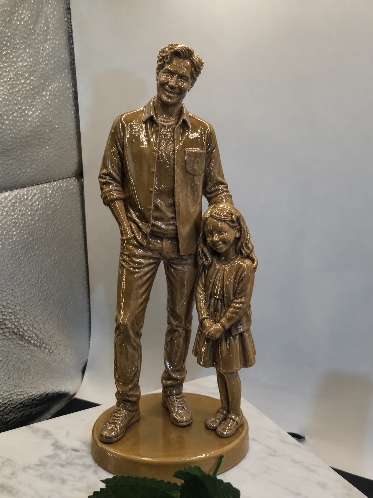
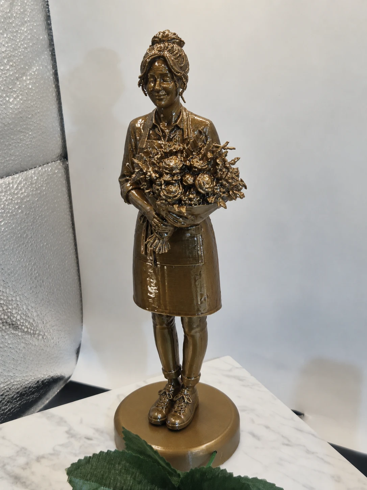
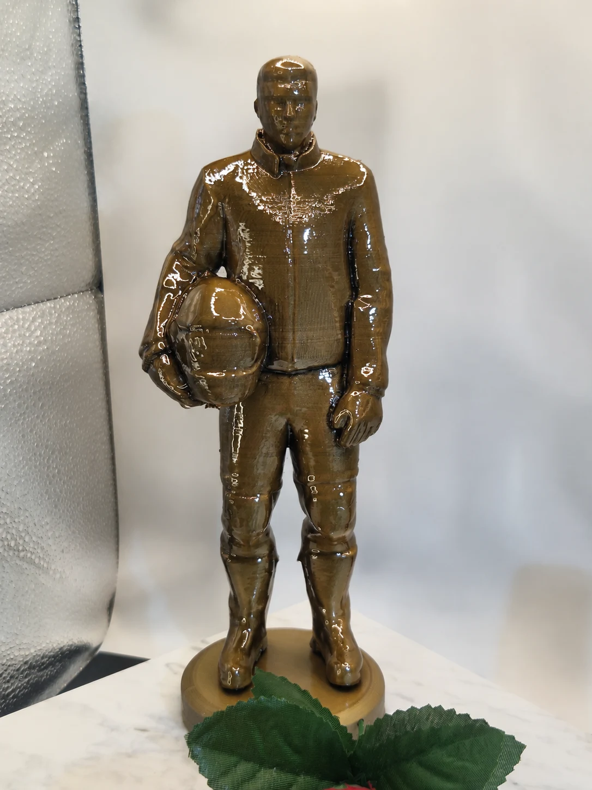
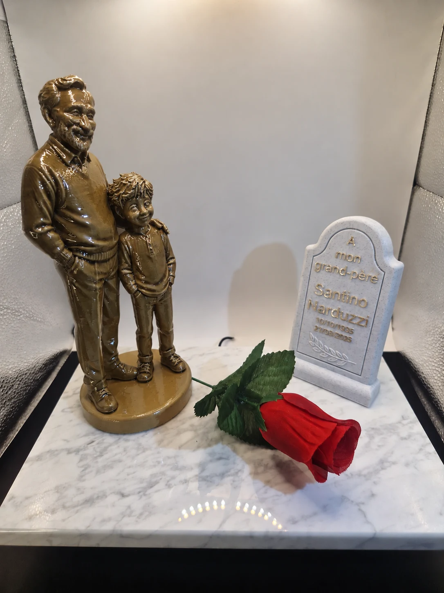
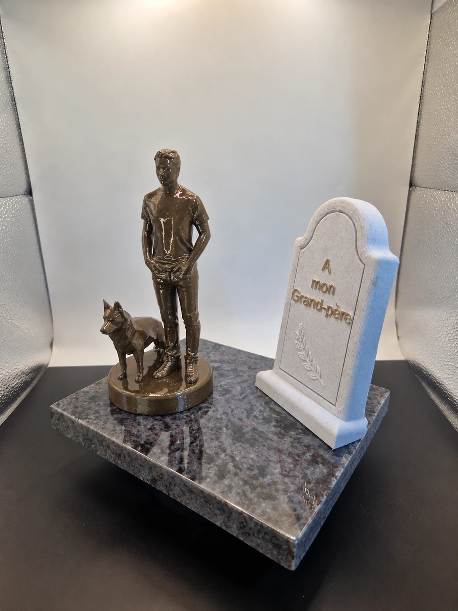
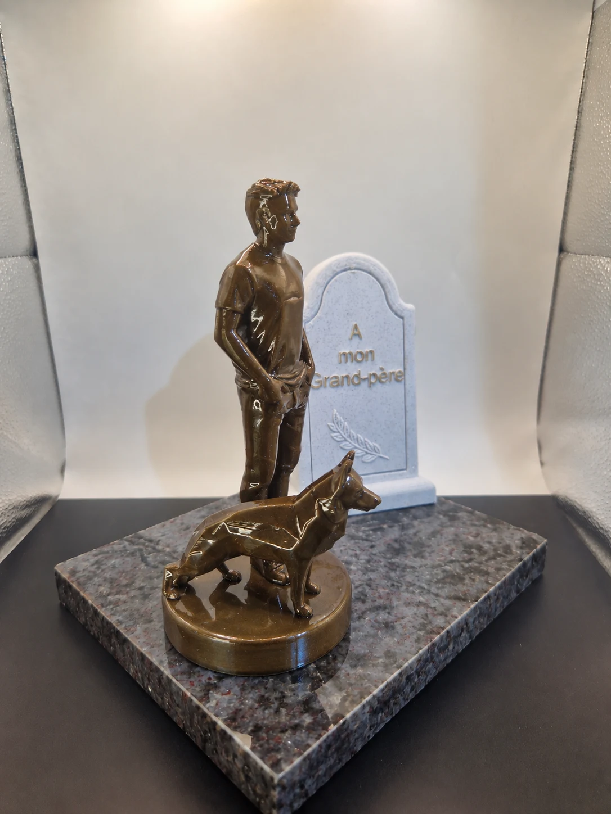
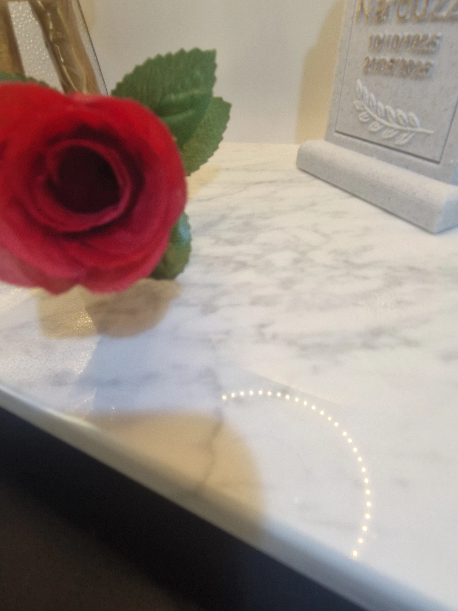
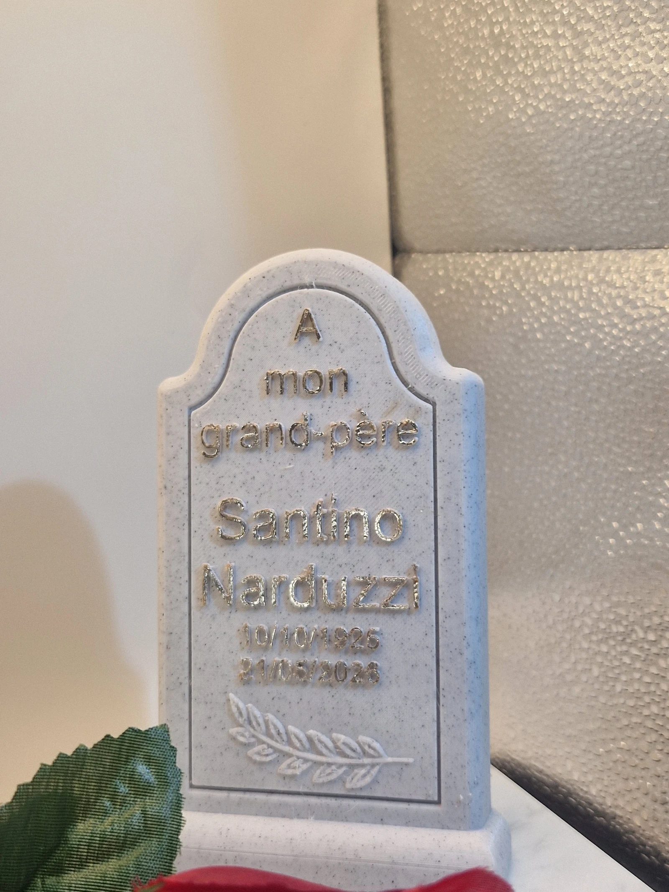

Un métier
Honorer une vocation, un uniforme, un savoir-faire ou une vie de service.
ANIMA · LA MANUFACTURE DE L’HOMMAGE
Un métier. Une passion. Un lien irremplaçable.
Des créations pour raconter une vie, dans ce qu’elle a de plus singulier.

LA COLLECTION · REGARDS SINGULIERS
Au fil des gestes, des passions et des liens,
un hommage prend forme.



LA GAMME CLASSIQUE · V1.1
La Classique donne une forme personnelle au souvenir : une scène figurative, un socle et une épitaphe composés autour de l'histoire de la personne.
Découvrir les possibilités de personnalisation ↗
UNE HISTOIRE SINGULIÈRE
Un métier, une passion, un animal ou un lien familial peuvent guider la création. L'épitaphe et les détails sont vérifiés avec vous avant fabrication.
La finition couleur bronze montrée ici est une option selon le modèle.
LE REGARD SUR LES DÉTAILS
Faire défiler pour découvrir les éléments qui composent l'hommage.



NOS CRÉATIONS
Explorez des métiers, des passions et des liens familiaux. Chaque création part d’une histoire singulière.
Les créations présentées sur le site sont disponibles. D’autres références viendront enrichir la collection au fil des prochaines créations.
Nos créations
ANIMA ouvre le langage commémoratif à tout ce qui compose une vie. La Collection propose des représentations existantes ; la création sur mesure prolonge les histoires singulières.
Honorer une vocation, un uniforme, un savoir-faire ou une vie de service.
Faire vivre ce qui animait la personne : musique, jardin, pêche, sport ou voyage.
Garder la présence d’un compagnon fidèle au cœur de l’hommage.
Composer une scène personnelle à partir de souvenirs et de liens essentiels.
La Manufacture
Chaque création suit un parcours maîtrisé, où la précision de la conception numérique rencontre la sensibilité de la main. Nous montrons l’exigence du geste sans réduire l’hommage à sa technique.
La technologie dessine les possibles.
La main donne son caractère à chaque pièce.
Création, adaptation et mise au point de la représentation.
Production à la demande et suivi individuel de chaque création.
Contrôle et préparation soignée des surfaces avant finition.
La résine époxy est appliquée manuellement au pinceau, pièce par pièce, pour révéler la teinte bronze et protéger la création.
Finition minutieuse des épitaphes et composition finale de l’ensemble.
Vérification de la création avant son départ de la Manufacture.
La Collection
Les créations déjà présentées sont disponibles. Métiers, passions, animaux, couples et symboles : la collection s’élargit progressivement pour offrir toujours plus de choix.
Création sur mesure
À partir d’une demande vérifiée, ANIMA étudie une représentation spécifique : posture, métier, passion, animal ou composition familiale. Les éléments sensibles — identité, dates, texte et photographie — restent soumis à validation avant fabrication.
Présenter un projet professionnelL’Univers ANIMA
La future sphère éditoriale d’ANIMA racontera les coulisses de la Manufacture : conception, gestes, assemblage, finitions, nouvelles créations et mises en scène. Une présence vivante, artisanale et contemporaine.
Bientôt sur nos réseaux
Catalogue professionnel
Accédez à la collection complète, au principe du tarif revendeur et à un parcours de commande simple. Demande réservée aux acteurs du funéraire, validée manuellement.